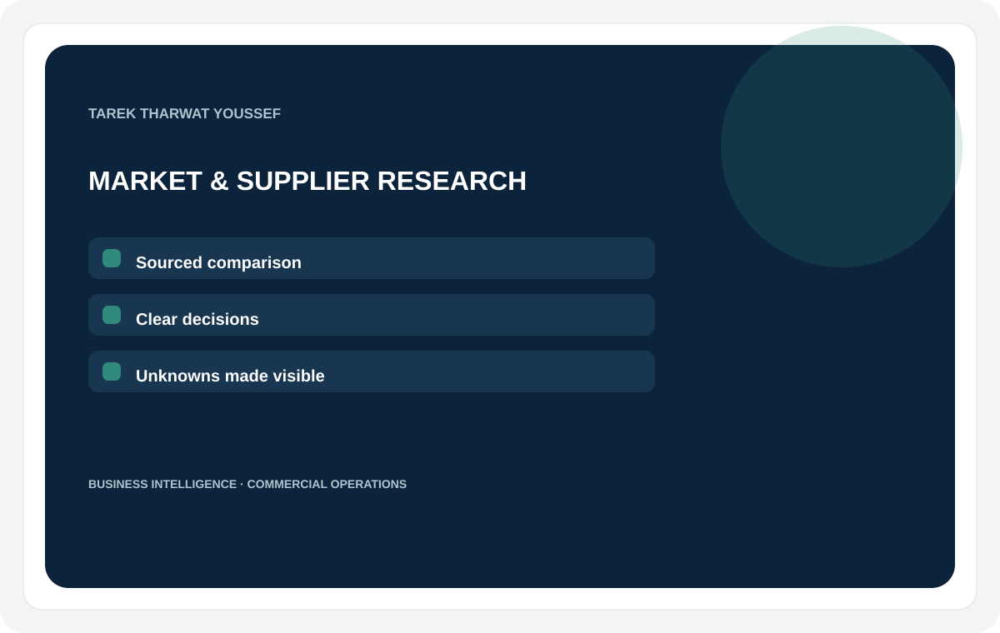
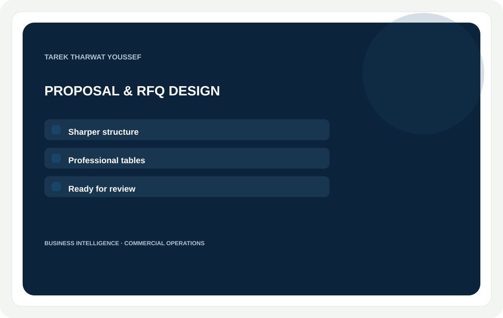
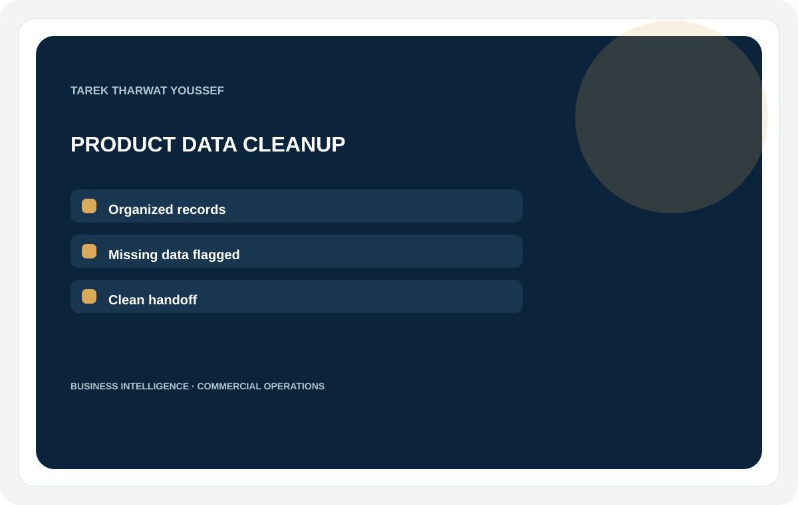

Service offers · draft for review
Clear, useful work with a defined handoff.
These offers turn the portfolio’s strongest evidence into focused buyer deliverables. Package ranges and time estimates are working drafts.

Market, competitor & supplier research
I will research your market, competitors or suppliers and deliver a decision-ready report.
Sourced comparisons with a clear distinction between evidence, estimates and open questions.
BuyerMarket-entry teams, SME founders, exporters and buyers making a defined comparison.
ProofEEMEI evidence structure and selected commercial research, with a fresh narrow sample prepared from public sources.
EntryOne business question · Three entities · Six agreed fields · Source-linked comparison · 2-page brief
StandardOne market / category · Five entities · Ten fields + source log · 4–6-page decision brief · One revision
PremiumTwo defined segments · Up to eight entities · Comparison + decision workshop · Scenario questions and next checks · Two revisions
Delivery time · working estimate3 / 5 / 8 business days · 4–6 / 8–12 / 16–24 focused work hours.
RequirementsDecision to make, product/category, target geography, comparison fields, intended audience and sources you have permission to share.
FAQCan you contact or certify suppliers? The packages compare available evidence; direct outreach or certification checks need a separate scope. Will you mark unknowns? Yes, the brief distinguishes sourced facts from open questions.
Search keywordsmarket research · competitor analysis · supplier research · market intelligence · sourcing analysis
Thumbnail conceptNavy, warm white and sea-green service card; evidence-first line with no stock imagery.
Draft price rangeEntry / standard / premium: $125 / $350 / $700 USD. Draft for review.

Commercial proposal, RFQ & business document
I will turn your business information into a professional commercial proposal, RFQ or business document.
Clear structure, polished tables and a review-ready handoff built from your supplied facts.
BuyerSMEs, procurement teams, founders and commercial managers.
ProofSanitized proposal structure and multilingual response-matrix case examples.
EntryUp to 5 supplied pages · One language · Structure + clean layout · One revision
StandardUp to 12 pages · Tables and comparison matrix · Editable file + PDF · One revision
PremiumUp to 20 pages or approved bilingual pack · Terms and table consistency review · Editable files + PDF · Two revisions
Delivery time · working estimate3 / 5 / 8 business days · 4–6 / 9–14 / 18–28 focused work hours.
RequirementsIntended reader and use, source facts, approved brand files, language/format, final approver and required delivery date.
FAQWill you create projections? The packages organize client-supplied figures; financial modeling is a separate service. Can you deliver in more than one language? Yes, when languages and review responsibilities are agreed at kickoff.
Search keywordsbusiness proposal · RFQ document · commercial presentation · supplier comparison · business writing
Thumbnail conceptNavy, warm white and sea-green service card; evidence-first line with no stock imagery.
Draft price rangeEntry / standard / premium: $175 / $450 / $850 USD. Draft for review.

Product catalogue & data cleanup
I will clean and structure your product catalog, spreadsheet or supplier data.
Consistent fields, clearer records and a useful list of missing or conflicting information.
BuyerOnline merchants, distributors and product teams managing inconsistent files.
ProofA structured catalog-cleanup workflow with exception tracking and organized outputs.
EntryUp to 25 records · One input file · Agreed core fields · Missing data list
StandardUp to 100 records · Up to 3 consistent files · Mapped fields + duplicates · Exception log + sample output
PremiumUp to 250 records · Agreed data schema · Source mapping · Review-ready export + handoff
Delivery time · working estimate2 / 4 / 7 business days · 2–4 / 6–10 / 14–22 focused work hours.
RequirementsA representative input sample, desired schema, record count, target platform/export, terminology rules and permission to share files.
FAQDo you create missing product specifications? No; the output flags fields for your team to complete. Can you handle scans or older spreadsheet formats? Send a sample for a scope check before purchase.
Search keywordsproduct catalog cleanup · spreadsheet cleanup · product data structuring · supplier data · data normalization
Thumbnail conceptNavy, warm white and sea-green service card; evidence-first line with no stock imagery.
Draft price rangeEntry / standard / premium: $75 / $225 / $500 USD. Draft for review.